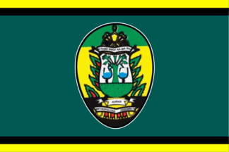

About Me
Hello! My name is Bright Junior Asadu, an aspiring digital marketer and entrepreneur from Ghana. I am passionate about affiliate marketing and building my brand, "assaybouy." Currently, I am a BYU-Idaho student studying Computer Programming. I also enjoy learning new things like playing the piano and exploring opportunities in the digital world.

Kumasi, Ghana
Kumasi, the capital of Ghana's Ashanti Region, is a vibrant city known for its rich history and bustling Kejetia Market, the largest in West Africa. The city's name originates from "kum" (tree) and "ase" (under). With a metropolitan population of over 3.4 million, Kumasi is a hub of trade and culture.
